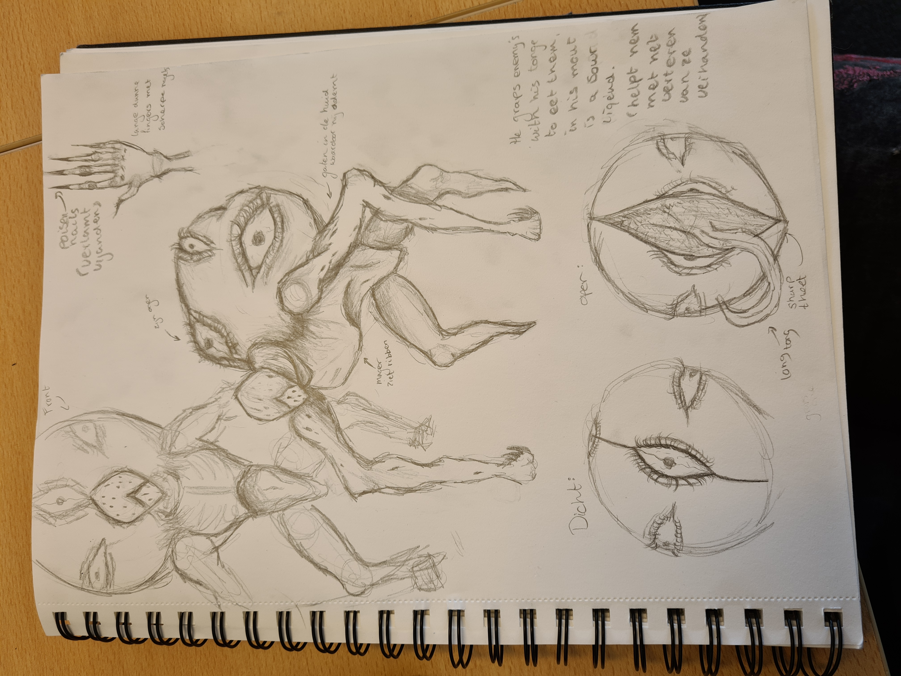
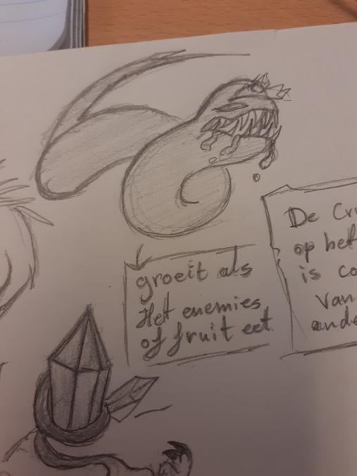

Description:
You play as Kega, after a space ship crash landed on your planet, you decided to investigate the damage, but then you discover a unknown species of monsters coming out of the space craft, what is the meaning of this. Who are those creatures, can Kega save them?


Next to this text, is the health script for this project, the color of the filling from the Healthbar would change color if it reaches a certain point. I had some problems at the time where the colors wouldn't change, whatever I did, but that was fixed a few hours later.
As a team we also made our own team name named: FreeAgentsGames. The artist even made the logo of our Team:

There was alot of sketches too made by the artist, like these ones. The credit goes to all the artist that participated in this project.




We also gotten someone to make the music, named: Christoff The Game Guy, a personal friend of mine on Gamejolt. If you want to check his work out, here is the gamejolt Link:
This game was never published because I want to respect the artist wishes, but I will only let you see the code through the github what the game devs including me and the artist for art has made for the game itself.
I had alot of fun working on this project, but there were some problems with while development, because I tried to do everything and could not stop myself, it even became worse when I tried to make the work of the artist, but they stopped me after that. I just had to be controlled that I don't made everything on my own, which was pretty funny to be honest.